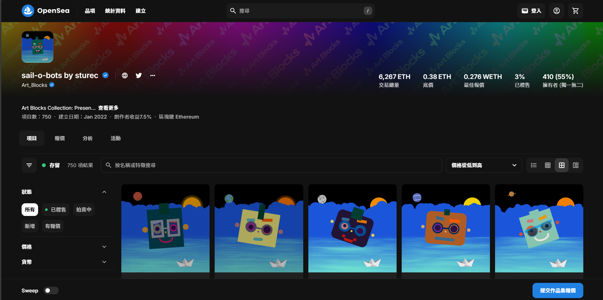

Live Ham
Live Ham是一件為Hamily社群創作的互動作品，提供給sail-o-bots NFT藏家與自己收藏的HAM進行互動，進入HAM的世界，化身為HAM。使用p5.js與ml5.js製作。
HAM Control
- 可控制：臉位置、前後大小、左右側移、眉毛、眼睛、嘴巴
- 眨眼音效：距離遠（人離鏡頭遠，HAM臉變小）時聲音較小，頻率較低，靠近時變大聲，頻率稍高
UI
- Captured window show/close：顯示或關掉 tracking 視窗
- Random：隨機產生不同HAM臉組合
- Sea/Live/Alpha：切換三種背景，原生海背景、與身體合成的真實世界背景、方便下載存圖的透明背景等
- Input：輸入NFT Hash Code產生對應HAM，藏家可與自己的收藏互動
- Save：存圖檔
